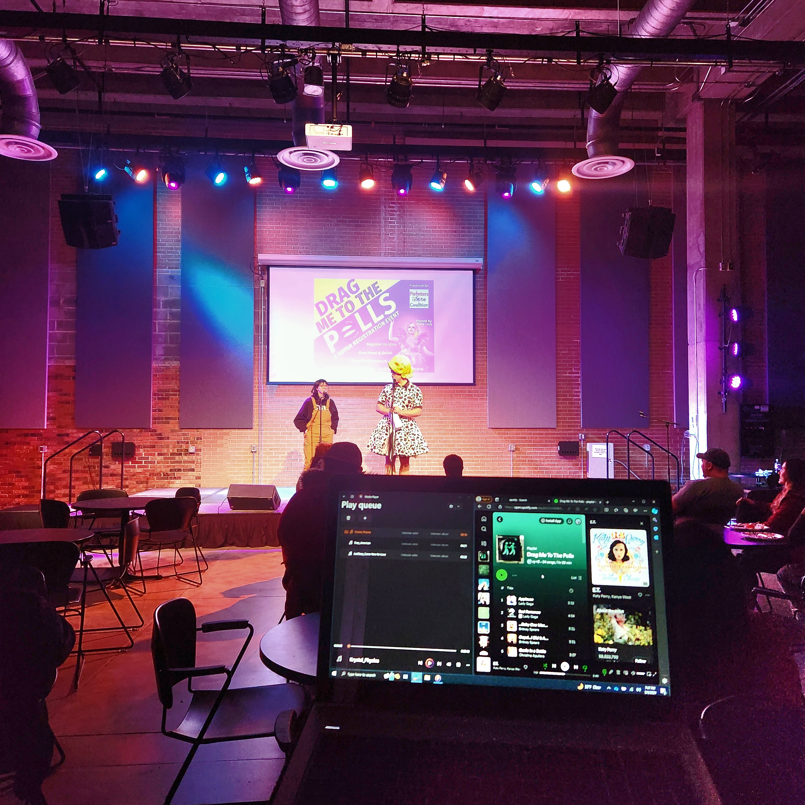
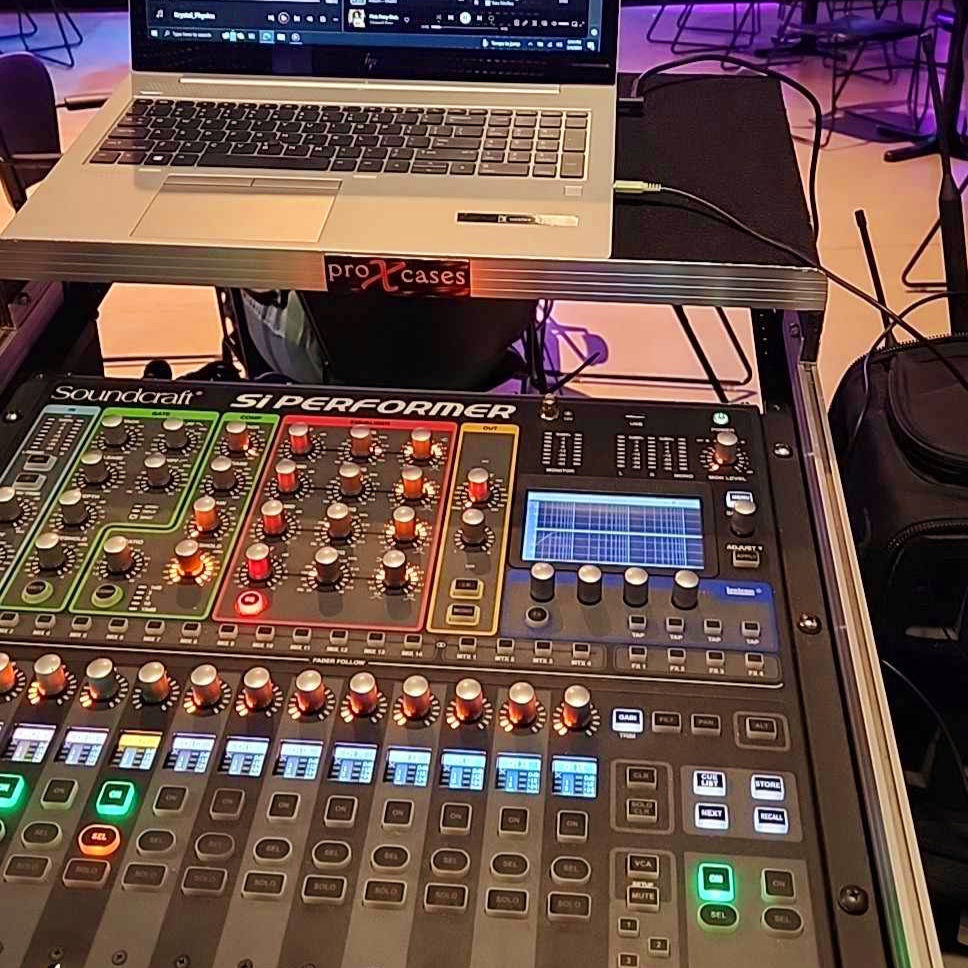
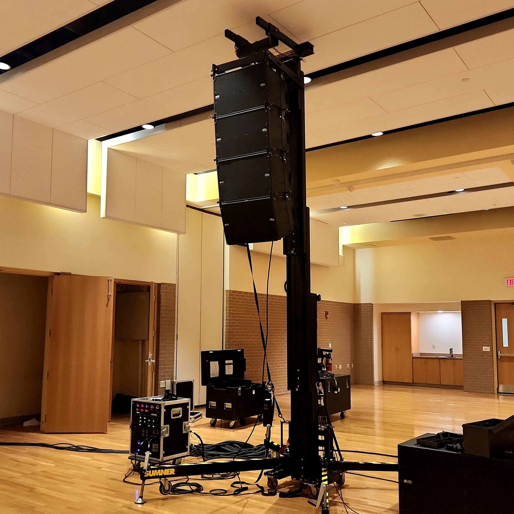
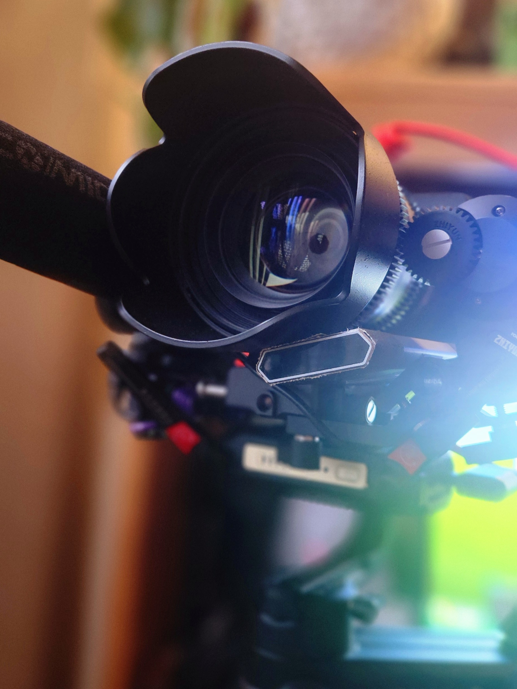
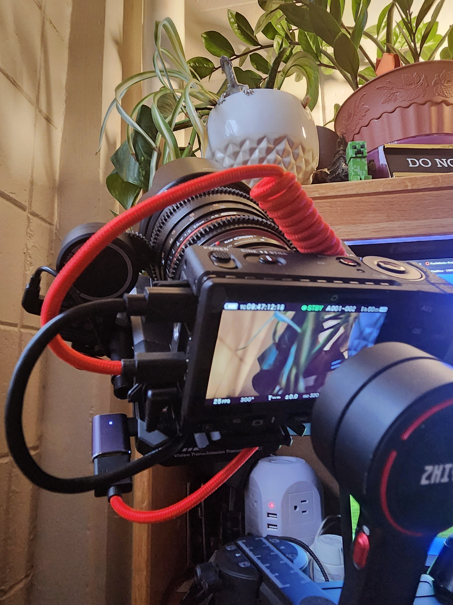

Hello, my name is Will Boeckman and I am a Computer Information Systems (CIS) Major at UW-Stevens Point! I have always had an interest in computers ever since our family got one when I was a kid, and ultimately has led me to persue a degree.
The family computer was an XP machine, hence this site's style!



I currently work for Event Technical Services at the University Center in the DUC. I help provide audio/visual technical services for student and university-affiliated organizations, concerts, movie screenings, and much more!


One of my hobbies is Videography and Photography. I had a handful of opportunities over the past two semesters to experiment, so go check out my image gallery!
Well, Thats all for this section! Poke around the desktop to find more pages to explore!